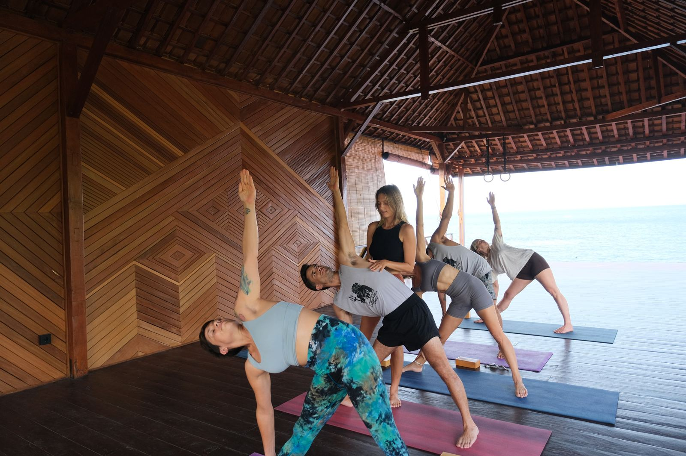

Domů / Pohyb
Pohyb bez mantinelů.
Skupinové lekce hravá flow a integrovaná terapie, individuální lekce a lekce pro firmy.
Individuální lekce
Péče ušitá na míru
Pro tebe, ne pro skupinu. Kombinuji jógu, dech, pohyb i masáž, přizpůsobené přesně tobě. Sledujeme tvůj progres, zadávám domácí úkoly a jsem ti k dispozici i mezi lekcemi. Osobně i online.
- Nezávazná úvodní lekce. Poznáme se a zjistíme, co potřebuješ.zdarma
- Balíček 5 lekcí5 000 Kč
- Balíček 10 lekcí, domácí úkoly, dokumentace progresu, podpora přes WhatsApp10 000 Kč
Skupinové lekce
Hravá flow a integrovaná terapie
Integrovaná terapie
Možná nepotřebuješ víc cvičit. Možná jen jinak. Detailní práce s tělem, přesné vedení a hlubší porozumění pohybu, inspirované linií B.K.S. Iyengara, ve které jsem se sama učila. Vhodné i pro ty, kdo mají za sebou zranění nebo je bolí záda.
Hravá flow
Rozproudi energii a pohybuj se s radostí. Dynamické sekvence, síla a kreativita. Někdy jemnější, jindy silovější, vždy bez tlaku a vždy trochu jiná.
Lekce probíhají v Přerově, Olomouci, Lipníku nad Bečvou a Hradčanech. Cena 200–300 Kč za lekci.
Firemní lekce
Jóga a dech přímo u vás
Pravidelné lekce jógové terapie pro týmy v Přerově a Olomouci. Ulevují zádům a hlavě, zlepšují posturu při dlouhém sezení a posilují odolnost vůči stresu. Začínáme nezávaznou úvodní lekcí.
Co říkají ti, kdo to zažili
Díky Lenčinu individuálnímu přístupu je pro mě nyní jóga radostí, záda mě nebolí a cvičím i sama doma.
Jsem workoholik. Díky józe s Lenkou jsem zpomalila. Učím se mít ráda svoje tělo, trénuji dechové návyky a užívám si jejich vliv na energii i duši. Po hodině cvičení je mi skvěle. Umím pracovně vypnout, zklidnit se a zahnat negativní myšlenky.
Lenčiny online lekce jsou skvělé. Vytvoří ti lekci přímo na míru. Řekneš jí předem, s čím máš problémy, a ona ti udělá lekci přímo na to. A hlavně to jsou cviky, které nejsou těžké a které můžeš dělat i sama doma. Všem moc doporučuji!
Nevíš, která lekce je pro tebe?
Napiš mi pár vět o tom, co tě trápí nebo co hledáš. Společně najdeme cestu.